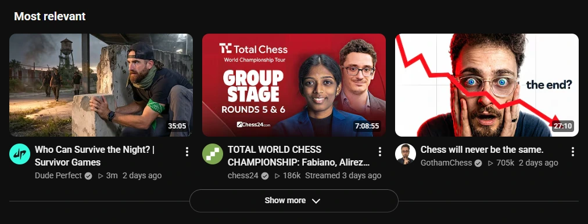
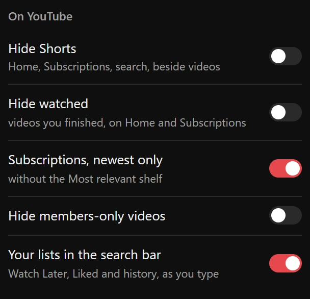

Guide 09·Subscriptions
How to remove Most relevant from YouTube Subscriptions.
Updated 17 November 2026
Short answer
YouTube has no setting to turn off Most relevant in Subscriptions. Since 2026 it puts a shelf of videos it picked under that heading into a feed that's otherwise newest first, and some of them are already in the list above it. Needle adds the switch: turn on Subscriptions, newest only and the shelf is gone, leaving your channels' uploads in order.
01·On YouTube
What YouTube changed
Subscriptions used to be one plain list: every new upload from the channels you follow, newest first. It still mostly is. The page opens under the heading Latest, and the videos run from the most recent down.
Then, part-way down, there's a shelf with its own heading, Most relevant. Checked on 17 November 2026 on a signed-in account, it came after the ninth video: three uploads YouTube picked, and a Show more button under them. One of the three was already second in the list above.

Where it sits isn't fixed. Since February 2026 people have reported it at the very top of the page, where it pushes the newest uploads down. Either way, YouTube has no setting to turn it off, and nothing on the shelf itself dismisses it.
02·workaround
Without an extension
The only things that work are scrolling past it, or adding a userscript (through Tampermonkey) or your own ad-blocker filter that hides that part of the page. Both of those stop working when YouTube changes how the page is built, and someone has to fix them.
03·With Needle
Turn it off with Needle
- Click Needle's icon in your browser's toolbar.
- Under On YouTube, switch on Subscriptions, newest only.
- Open Subscriptions. No Most relevant, just your channels' uploads, newest first, straight away and every visit after.

04·What counts
What it changes, and what it leaves
- Changes: the Most relevant shelf on your Subscriptions page, and nothing else.
- Leaves: every other video in the feed and its order, the Shorts shelf, and Home.
Off by default, like everything Needle changes on YouTube's own pages: nothing disappears until you ask. Switch it off and the shelf is back.
05·Combine it
Make Subscriptions only what you want
The switches beside it clear the rest: Shorts, videos you've already watched and members-only videos you can't watch anyway. If one channel you follow posts too much, Mute channel takes it out of everything. And if it's search where you miss newest first, that can come back too.
06·Questions
Questions?
Can you turn off Most relevant on YouTube Subscriptions?
Not with a YouTube setting. There's no option for it in YouTube's settings or on the page, and the shelf has no menu of its own to dismiss it. Needle's Subscriptions, newest only switch takes it out.
Is the rest of my Subscriptions feed still in order?
Yes. Everything outside the shelf is your channels' uploads, newest first, under the heading Latest. Only the Most relevant shelf is YouTube's choice.
Why are the same videos in Most relevant and the list above it?
The shelf picks from what's already in your feed, the uploads YouTube expects you to click, so a recent one can turn up twice. On the account checked for this guide, one of its three videos was second in the list above.
Where is the Most relevant shelf?
It moves. On the account checked on 17 November 2026 it came after the first nine videos. Since February 2026 some people have reported it at the very top. Needle finds it wherever it is.
Does it take Shorts out of Subscriptions too?
No, that's its own switch, Hide Shorts, right beside it. Subscriptions, newest only leaves the Shorts shelf alone.
Does it work if my YouTube isn't in English?
Yes. Needle finds the shelf by its place in the page, not by the words in its heading.
Does it work on my phone?
No. Needle is for YouTube in a desktop browser: Chrome, or another browser that installs extensions from the Chrome Web Store.
Is it free?
Yes. No account, no trial, no paid tier.